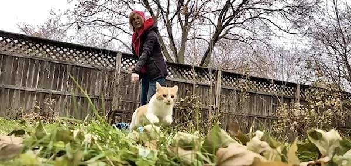

Urban Cat Coalition is not your typical cat rescue. We deal with cats that most rescues turn away or euthanize. It takes a special person to do this work. It is rewarding but tough! If you think you are the kind of person who can love a cat enough to know sometimes their best home is on the streets - we are the rescue for you!
Administration: Can include data entry, bookkeeping, grant writing, etc
Events: Tabling at events such as PetFest, The Pet Expo, Barktoberfest, and smaller Meet n' Greets. This can include behind-the-scenes planning, organizing, and taking inventory of merch.
Fostering: Keeping cats and/or kittens in your home until adoption. (This requires a separate application) Foster App
Fundraising: Planning and organizing fundraising events. You can join a team and assist, or lead ideas with some assistance.
Medical: Helping out fosters by giving vaccinations to cats, dewormers, flea meds, etc. Can also assist in following up with fosters on cat medication schedules and data entry.
Trapping: Working with colony caretakers to set traps, taking cats to their spay/neuter appointments, and holding cats in a safe temperature controlled space for 24-48 hours for recovery. This includes additional in-field training and shadowing of a trapping team lead.
Transport: Taking cats to and from appointments at WHS, WHS S/N Clinic, HAWS, or between foster homes.